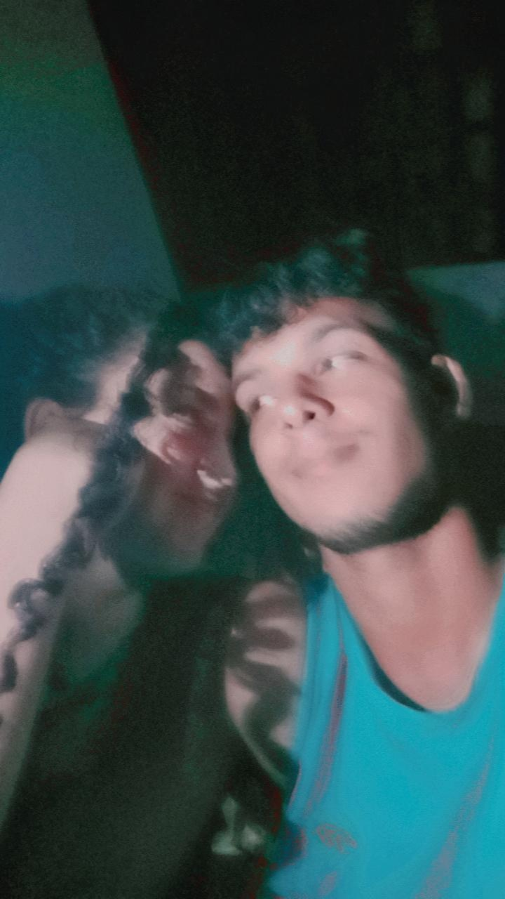
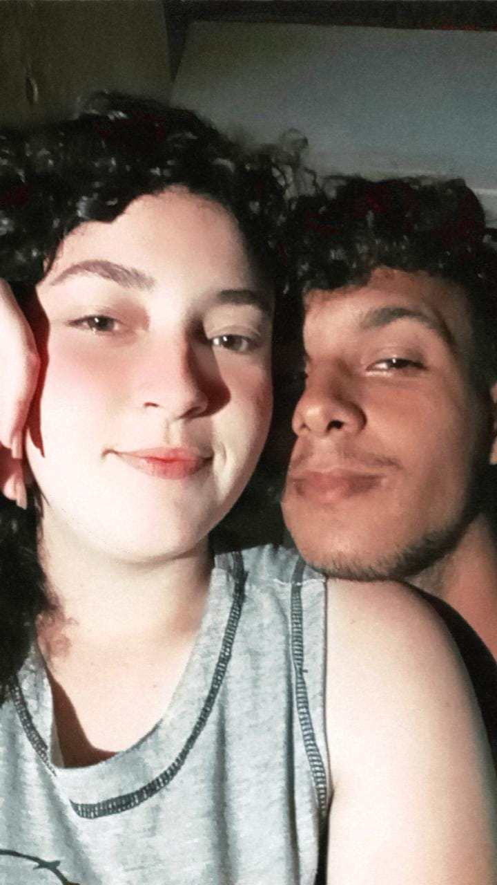
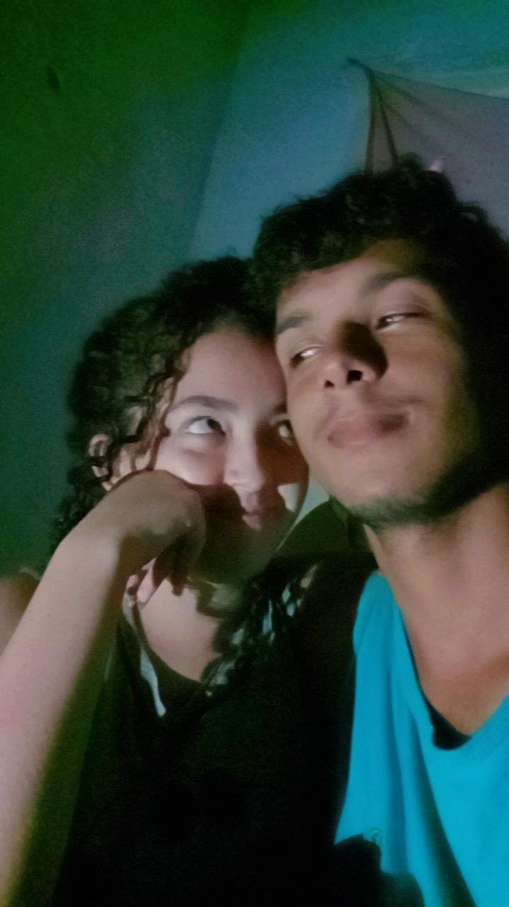

Para Gabrielli, meu amor 📚🌷
Existem pessoas que passam pela nossa vida como páginas que o tempo leva.
E existem aquelas que se tornam parte da história que jamais queremos terminar.
Você, Gabrielli, chegou de um jeito que talvez nem o universo consiga explicar.
E, aos poucos, sem pedir licença, encontrou um lugar dentro de mim que eu nem sabia que estava vazio.
Desde então, algumas coisas mudaram.
Os dias parecem diferentes quando sei que você está neles. As pequenas coisas ganharam mais significado.
Um sorriso seu pode mudar completamente o rumo de um dia. Uma mensagem sua pode fazer o mundo parecer um lugar mais leve.
E, entre todos os caminhos que a vida poderia ter colocado diante de mim, houve um que me levou até você.
E hoje, olhando para tudo isso, eu penso que talvez o amor seja exatamente assim:
Não encontrar alguém perfeito.
Mas encontrar alguém que, mesmo com suas imperfeições, faz você sentir que encontrou algo raro.
Gabrielli, se algum dia você se perguntar o tamanho do espaço que ocupa na minha vida, eu espero que se lembre disto:
Você não é apenas uma parte bonita da minha história.
Você é uma das razões pelas quais eu quero continuar escrevendo.
Porque existem sentimentos que não cabem em mensagens. Não cabem em presentes. E talvez nem em uma carta.
Mas ainda assim, eu quis tentar.
Porque, se existe uma pessoa que merece que alguém pare por alguns instantes e transforme sentimentos em palavras, essa pessoa é você.
E se eu pudesse fazer um pedido ao tempo, não pediria para voltar ao passado.
Eu pediria apenas mais momentos.
Mais risadas.
Mais conversas.
Mais abraços.
Mais dias em que, independentemente de tudo o que esteja acontecendo no mundo, eu possa olhar para você e pensar:
Ainda bem que, entre tantos caminhos, eu encontrei você🌹🐇⏰♥️✨.
Então esta carta é apenas uma pequena tentativa de guardar em palavras algo que eu sinto de uma forma muito maior.
Porque algumas pessoas são difíceis de explicar.
E você é uma delas.
Mas, se eu tivesse que resumir tudo em apenas uma frase, seria esta:
“Mesmo que lanças caiam do céu ou meteoros despenquem, dedicarei minha vida a protegê-la.”
E se esta carta pudesse continuar para sempre, talvez eu ainda não conseguisse escrever tudo.
Então vou terminar apenas dizendo aquilo que realmente importa.
Gabrielli...
Obrigado por ser a pessoa que me cativou e que, entre tantas pessoas no mundo, se tornou única para mim. 🦊🌹❤️✨.
Mas, se um dia você precisar saber ate onde iria por você, saiba que talvez eu apenas sorria e diga: "Não aconteceu nada!"
Daniel ❤️


